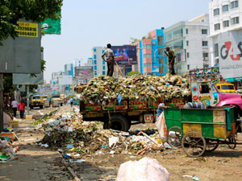
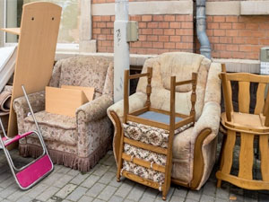
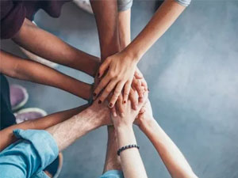
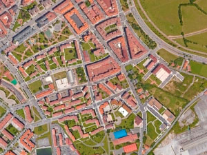

BE2IN: La red solidaria P2P en comunidades locales
Desperdicio de alimentos
Se estima que un tercio de todos los alimentos producidos a nivel mundial se pierden o se desperdician. En un mundo en el que casi mil millones de personas pasan hambre, esto es inaceptable. > Leer más...
Reducción de residuos
En Suecia, las estadísticas dicen que el 99% de los residuos domésticos se reciclan, lo que denota una gran cultura del respeto al medio ambiente, digno de ocupar un hueco en nuestros hogares y bolsillos. > Leer más...
Bien común
El bien común es un concepto que en general puede ser entendido como aquello de lo que se benefician todos los ciudadanos así como los sistemas sociales de los cuales todos dependemos. > Leer más...
Acción comunitaria
La acción comunitaria promueve la puesta en evidencia de vínculos entre los individuos y de la posibilidad de aplicar conjuntamente los valores, para alcanzar resultados de mutuo interés. > Leer más...